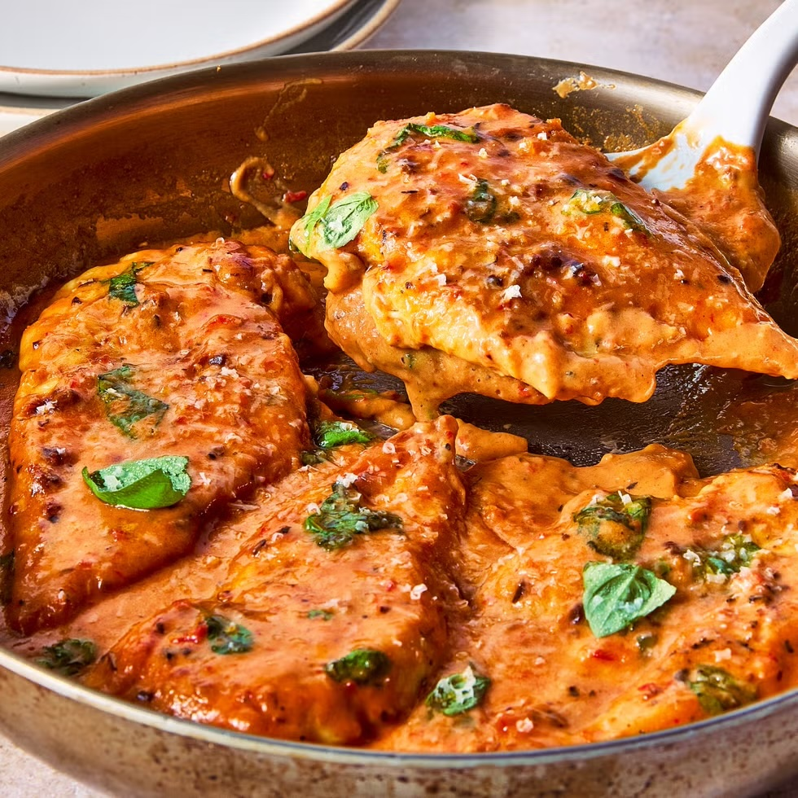

Home
Marry Me Chicken Recipe

Description
One pan tender chicken in a creamy sauce
- Prep time: 10 mins
- Cooking time: 30 mins
- Total time: 40 mins
- 4 servings
Link to original recipe
Ingredients
- 3/4 cup chicken bone broth
- 1/2 cup heavy cream
- 1/4 cup whole milk cottage cheese
- 2 Tbsp. chopped sun-dried tomatoes (from about 4 tomato halves)
- 2 Tbsp. finely grated Parmesan, plus more for serving
- 1 tsp. tomato paste
- Kosher salt
- Freshly ground black pepper
- 4 (6-oz.) boneless, skinless chicken cutlets
- 2 Tbsp. all-purpose flour
- 1 tsp. Italian seasoning
- 2 Tbsp. extra-virgin olive oil
- 1 Tbsp. unsalted butter
- 2 garlic cloves, finely chopped
- 1/4 tsp. crushed red pepper flakes
- 1/2 cup fresh basil leaves, torn, plus more for serving
Steps
- In a blender, puree broth, cream, cottage cheese, tomatoes, Parmesan, and tomato paste until smooth; season with
salt and black pepper.
- Pat chicken dry; season all over with salt and black pepper. Sprinkle with flour and Italian seasoning,
pressing with your fingers to adhere.
- In a large skillet over medium-high heat, heat oil. Working in batches if needed, cook chicken, turning halfway
through, until browned on both sides, about 5 minutes per side. Transfer to a plate and let rest 5 minutes.
- In same skillet over medium-low heat, melt butter. Add garlic and red pepper flakes and cook, stirring and scraping
browned bits from bottom of skillet, until fragrant, about 30 seconds.
- Return chicken and any accumulated juices to skillet. Pour sauce over. Add basil and cook, spooning sauce over chicken,
until sauce has slightly thickened, 5 to 7 minutes; season with salt and black pepper.
- Divide chicken among plates. Top with more Parmesan and basil.